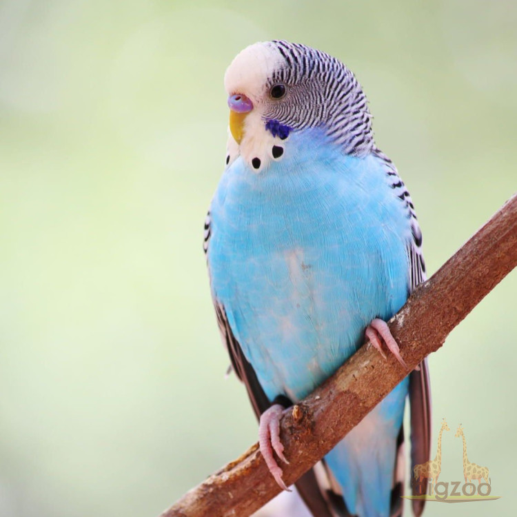

Загальний опис птахів
Птахи - це теплокровні хребетні тварини, які мають крила та пір'я.

Екологічні групи:
- Хижаки
- Орли
- Сови
- Водоплавні
- Качки
Таблиця характеристик
| Назва виду | Тип живлення |
|---|---|
| Орел | Хижак |
| Пінгвін | Рибоїдний |
Мультимедіа та Карта заповідників
Голос папуг у парку:
Представник папугоподібних:
Мапа заповідників: